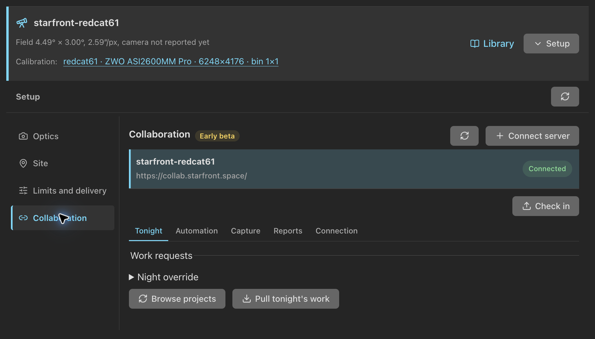
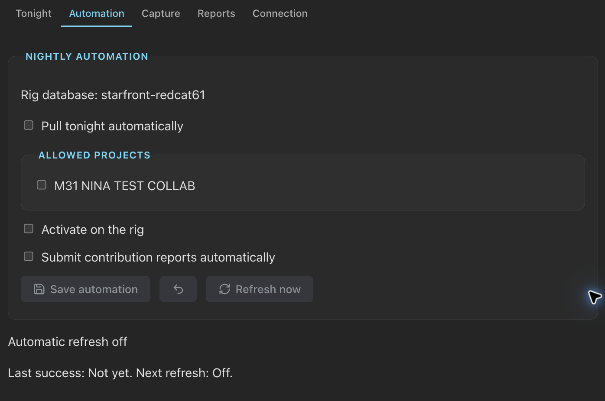

Collaboration
Join shared imaging projects on an AstroCollab server, such as Starfront. PSF Guard pulls each night's assigned work into a rig's Target Scheduler database, reports the frames that pass review, and uploads their files.
Connect a rig
Open Settings › Rigs, choose Setup on a rig, then Collaboration. Choose Connect server. The wizard has three steps:
- Server: the server's HTTPS address and the remote name for this rig.
- Sign in: browser sign-in or a pairing code, whichever the server offers. For browser sign-in, approve on the server's page, then choose Check sign-in.
- Capture: this rig's filters, exposure lengths, binning, color mode and hours per night. Finish setup saves them.
Close the wizard at any step and resume with Continue setup. Optics come from the rig's own setup. Set the rig's site first: nightly work uses it for the observing night and the Moon.

Tonight
Choose a connected server to open its tabs. On Tonight:
- Browse projects lists projects this rig can shoot. Join consents to share; it does not start anything.
- Pull tonight's work asks for the rig-local night, noon to noon, with its Moon context. Night override asks for another date.
- Review import shows each panel and filter visit. Import draft creates an ordinary inactive project draft. Apply fetches the work again and refuses a review that changed.
A reviewed import keeps Starfront's mapping from each physical filter to
the data bands it delivers, such as OSC-RGB or
Ha+OIII, and the project's limits on OSC cameras and Bortle class.
Work for a band the project turned off stays held, even when its filter is
still listed. A sky limit that cannot be read needs review.
Then open the project's plan workspace, give the rig a template for each assigned filter at the assigned exposure, and activate. Activation uses the assignment's exact panels, angles and frame counts. Target Scheduler may finish the work on later nights; an assignment is not a deadline, and applying it again does not refill its quota.
Automation
On Automation, tick the joined projects PSF Guard may act on, then turn on what you want:
| Option | What it does |
|---|---|
| Pull tonight automatically | Pulls work once per rig-local night, and again after a restart if the night's pull has not run. Failures back off and retry. A busy database retries the saved work locally. |
| Activate on the rig | Writes safe assignments into this rig's database. A new draft takes the one template that matches its filter and binning. Ambiguous or edited recipes wait for review in Planning. |
| Submit contribution reports automatically | Checks for ready images every five minutes and sends reports from the outbox, without an open browser. |
Save automation keeps the choices. Refresh now runs the saved automation at once. It never joins a project for you. The tab shows the last success, the next refresh, errors and held assignments. Plans you already have stay in place through outages.

Reports
A report credits the frames a rig shot for an assignment. PSF Guard sends only accepted frames with measured evidence:
- a fresh pixel plate solve, with a footprint shared across the frames;
- exposure length within 0.1% of the assigned one (10 ms to 1 s), reported as saved, not as planned;
- pixel scale, focal length, HFR, guiding RMS, bandpass, Moon illumination and separation, where the files and catalog hold them. Missing values read Unknown;
- for frames taken by the Director plugin, a matching saved-capture receipt.
A report names the data bands its frames deliver, as the assignment gave them, and the frames' camera must agree with the band: color for an OSC band, mono otherwise.
On Reports, pick an imported visit, its panel and the accepted images, set Observing night to the night they were shot, and choose Review N images. Queue finalized contribution freezes that review in a durable outbox, and Check in sends it. A failed batch stays queued for the next try. The tab keeps each report's delivery and the server's acceptance or rejection, with its reason. A remote rejection never changes your grades.
Upload contribution files
A report credits frames; it sends no image. Where Starfront collects files for a project, Reports › Contribution files sends them:
- On Reports, pick the imported visit, its observing night, the remote panel and the accepted images, as for a report.
- Under Files to send, keep Raw lights and matched calibration, or pick an existing PSF Guard or WBPP stack of those lights. WBPP does not record which source frames a stack used, so PSF Guard asks you to confirm that the stack contains the selected images.
- Choose Upload pending.
Matching, checks and checksums run in the background, and a normal upload needs no second approval. Only an exception waits for review: Upload reviewed files sends one held for review, and Review and retry tries a held or cancelled one again. Raw lights go with exactly the calibration frames an export picks for them, measured flat groups and matched dark-flats included. A transfer whose lights need corrected flats asks for a stack instead of sending raw lights. Inspect files lists each file with its type and size. File delivery adds no exposure credit and sends no report.
Send files automatically
Upload accepted collaboration files automatically is a separate opt-in, off by default. It works on the rig's database, and Automatic files picks Raw lights and matched calibration or PSF Guard stacks; WBPP stacks require a manual upload. Raw delivery queues new exposures and lights whose files changed, without hashing old frames on every pass. A change to a light or its calibration holds the package for review, as does missing calibration where the export settings let such lights through. Starfront must collect files for the project, and the rig's credential there needs a Discord owner.
Follow transfers
Each upload is a transfer, listed under Contribution files and as Transfers in the header's background jobs, under Started by you or Automatic. A row gives its state (Checking files, Pending, Uploading, Paused, Retry scheduled, Review required, Needs attention), its files and bytes so far, and buttons to pause, resume, review and retry, or cancel it. A transfer awaiting review counts as needing your attention. An outage does not block check-ins or acquisition.
Receipts record each file sent, per server, project, remote owner, file kind and SHA-256 of its content. They survive a restart. A file already sent to that destination is not sent again for another job, so shared calibration frames go once; PSF Guard sends it again if the destination or file contents change. A file cut off mid-upload starts again from its beginning, without leaving a duplicate on the server.
Starfront receives the files, not which calibration frame serves which light. PSF Guard keeps that list and warns about it in review; the project's coordinator must keep the files together. Original image files never change. PSF Guard caches a copy of the file during upload.
Share current activity
Share current activity, on Capture, is off by default. When on, fresh Director status reaches the server at most once a minute. Target names and pointing stay private, and old status never shows as current.
Credentials
The server keeps each rig's agent token in
collaboration-credentials.json beside the registry, readable only by
its owner. Tokens are plain text on disk: keep the file out of shared backups and
bug reports. Check connection tests the saved token.
Disconnect removes it here but keeps the rig's identity and queued
reports; it does not revoke the agent on the server. See
Configuration.